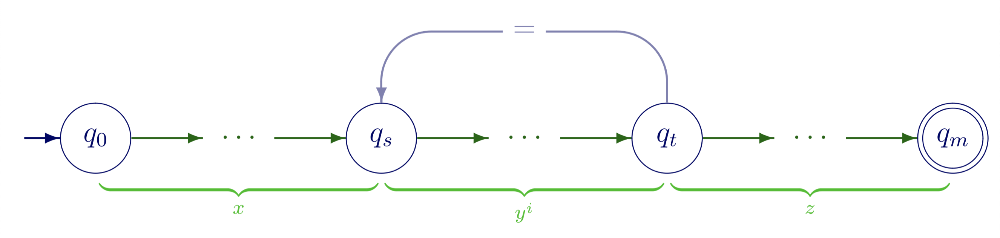
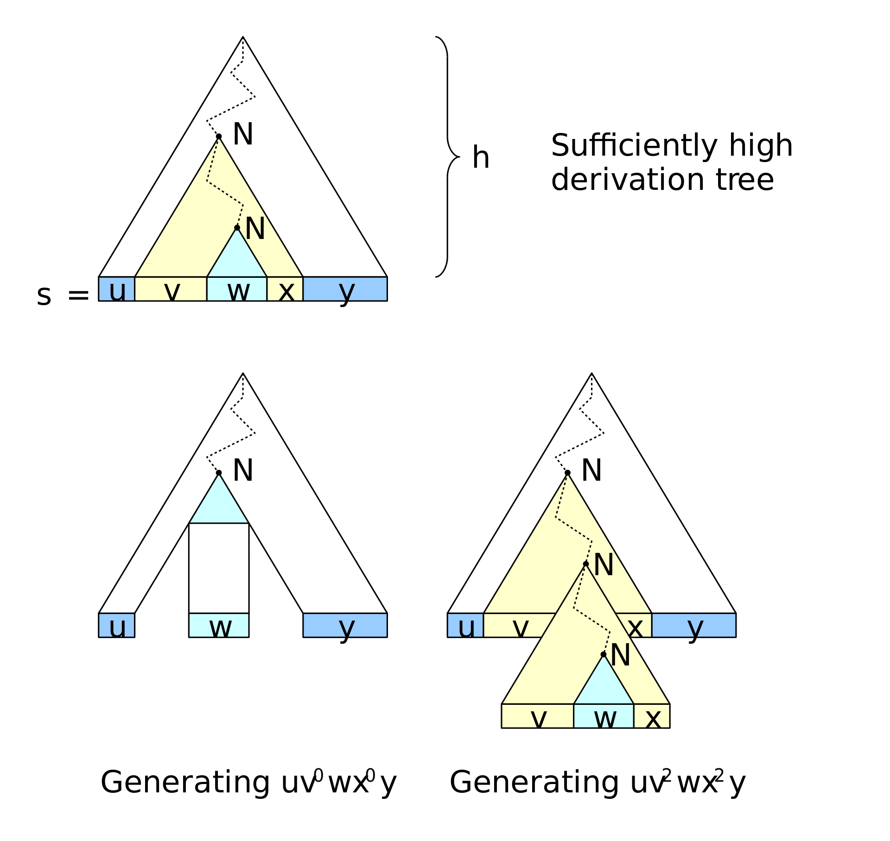
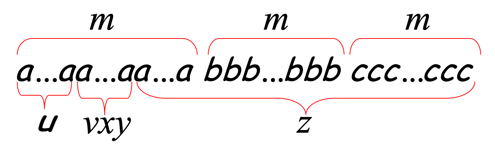
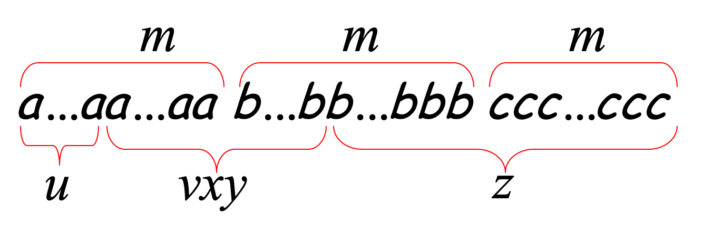

正则语言的泵引理
根据正则语言的定义
如果一个语言被一台有穷自动机识别，则称它是正则语言。
那么，判断一个语言是不是正则语言，便可以看它是否有可能有一台与之对应的有穷自动机。例如，对于语言 $B$ ，设
$$B=\lbrace0^n1^n\vert\ n\geqslant0\rbrace$$
如果分析一下的话，会发现，想要找到一台有穷自动机识别它的话，是不可能的。由于“0”的个数和“1”的个数必须相等，那么这台自动机便不得不记住前面已经“吃掉”的“0”的个数，然后再根据后续输入的“1”的个数来决定识别与否。但是别忘了这台自动机是有穷的。想要一台有穷的自动机记住无限制的“0”的个数是不可能的，由此，我们便判断，语言B不是正则语言。
然而，仅仅根据定义判断一个语言是否是正则的，有时候是十分困难的。例如，考虑下面两个语言 $C$ 、$D$ ：
$$C=\lbrace\omega\vert\ \omega中0和1的个数相等 \rbrace$$
$$D=\lbrace\omega\vert\ \omega中01和10作为子串出现的次数相等 \rbrace$$
依照上面的思路，这两个语言都应该是非正则的。然而，事实却是，$C$ 不是正则的，而 $D$ 却是正则的。可见，仅仅是主观上的臆测，有时候是非常不靠谱的。这就引出了下面要讲的，也就是文章的正题——正则语言的泵引理(Pumping lemma for regular languages)。
正则语言的泵引理描述了所有正则语言必不可少的一个特性。如果我们能够证明某个语言不存在这个特性，那么我们便可以断定，这个语言是非正则的。这个特性就是：任意一个足够长的，属于某个正则语言的字符串，其中都存在某个长度不为0的子串，在这个字符串中将这个子串重复任意次所得到的字符串，依然属于这个正则语言。
形式化的来说，就是：
若 $L$ 是一个正则语言，那么存在一个数(泵长度) $p$ ，使得对于 $L$ 中任意一个长度不小于 $p$ 的字符串 $\omega$ ，都可以写为 $\omega=xyz$ ，并满足以下条件：
$$\lvert y\geqslant1\rvert$$
$$\lvert xy\leqslant p\rvert$$
$$(\forall n\geqslant0)(xy^nz\in L )$$
泵长度 $p$ 仅取决于语言 $L$ 。 $\omega$ 被分成三个部分 $x$ ，$y$ ，$z$ 时，$x$ ，$z$ 可以为空串 $\epsilon$ ，但 $y$ 不行。
形式化的证明这里就不展开了，那种东西既冗长又无趣，维基百科上便有。这里主要讲一下它的形象一些的证明思想。
根据正则语言的定义，如果一个语言 $L$ 是正则语言，那么一定存在着一台有穷自动机 $M$ 识别它。考虑一下这个有穷自动机。我们令泵长度 $p$ 为 $M$ 的状态数，则 $L$ 中任意长度不小于 $p$ 的字符串 $ω$（姑且设为 $n$ ），经过的状态序列的长度是 $n+1$，其中 $n$ 大于等于 $p$。那么根据抽屉原理，这个长度为 $n+1$ 的状态序列中，必然有两个状态是相同的，而这两个相同的状态，最迟最迟也会在序列的第 $p+1$ 个处出现，就像下面这幅图所展示的一样：

在这幅图中，$q_s$ 是序列中第 $s$ 个状态，$q_t$ 是序列中第 $t$ 个状态，这两个状态是同一个状态（鸽巢原理），那么我们把 $q_s$ 和 $q_t$ 之间的那个序列，所对应的子串(也就是上面的 $y$ )拿出来，重复 $n$ 次，最后这个字符串必然也一样能够被这个有穷自动机所识别，它在 $q_s$ 和 $q_t$ 这两个相同的状态之间转了 $n$ 圈，最终被识别。我们甚至可以把 $q_s$ 和 $q_t$ 之间对应的子串拿掉（也就是 $n$ 为0)，它也一样会被识别！
道理很简单，对不对？下面通过两个例子来说一下如何通过泵引理来证明一个语言不是正则的。
例子1.
设$F=\lbrace\omega\omega\vert\ \omega\in \lbrace0,1\rbrace^{*} \rbrace$.证明$F$不是正则的。
首先，假设 $F$ 是正则的，设 $p$ 是它的泵长度，那么字符串 $s=0^p10^p1$ 显然是属于 $F$ 的。根据泵引理,$s=xyz$ ，而其中的 $y$ ，肯定出现在 $0^p$ 中的。在这个情况下，把 $y$ 重复哪怕一次，所得到的字符串都不可能被 $F$ 识别，因此，这个语言不是正则的。
例子2.
设 $G=\lbrace0^i1^j\vert\ i>j\rbrace$.证明 $G$ 不是正则的。
跟上面一样，先假设 $G$ 是正则的，设 $p$ 是它的泵长度，令字符串 $s=0^{p+1}1^p$ .乍一看，它是正则的，因为把出现在 $0^{p+1}$ 中的那个 $y$ 重复任意次，得到的字符串也会被 $G$ 识别。但是，别忘了泵引理要求 $y$ 不但能够重复任意次，还要能够拿掉它！$y$ 的长度不为0，只要我们尝试拿掉 $y$ ，所得的字符串都将不能满足 $G$ 的要求，因此，$G$ 也不是正则的。
上下文无关语言的泵引理
正则语言的泵引理事实上是鸽巢原理在DFA中的应用，而下面所要讲的上下文无关语言的泵引理(pumping lemma for context-free languages)则是鸽巢原理在上下文无关语言中的应用。
跟上面的很像，它的形式化描述为：
若 $L$ 是上下文无关语言，那么存在一个数(泵长度) $p$ ，使得对于 $L$ 中任意一个长度不小于 $p$ 的字符串 $\omega$ ，都可以写为 $\omega=uvxyz$ ，并满足以下条件：
$$\lvert vy\geqslant1\rvert$$
$$\lvert vxy\leqslant p\rvert$$
$$(\forall n\geqslant0)(uv^nxy^nz\in L )$$
其中，第1个条件保证了 $v$ 或 $y$ 都不是空串。如果他们都是空串了，定理自然是成立的，但显然没有任何意义。下面来讲一下它的证明思路。
像上面的证明是将鸽巢原理用于正则语言对应的DFA中一样，接下来的证明则是将鸽巢原理用于语法分析树中。设 $G$ 为 $L$ 对应的上下文无关文法，$V$ 是 $G$ 中的非终结符的数量， $b$ 是文法 $G$ 中所有产生式中，右部符号数的最大值。那么，在 $G$ 的一棵语法分析树中，一个结点最多有 $b$ 个孩子结点。
直观来考虑，由于非终结符数量是有限的，那么，对于 $G$ 中一个足够长的字符串 $\omega$ ，它的语法分析树将会足够高，使得从语法分析树的根部（ $G$ 的起始符）到语法分析树的一个叶子结点（对应字符串 $\omega$ 的一个终结符）的一条路径，其经过了某个内部结点（设为 $N$ ，对应 $G$ 的一个非终结符）一次以上（鸽巢原理）。
那么，就可以在这里做文章了。很上面的类似，如果把上面的那一个 $N$ 的那个子树复制下来，用于替换掉下面的那一个 $N$ 的子树，我们事实上就扩展了 $\omega$ ，而如果把下面的那一个 $N$ 的子树复制下来，用于替换上面的那个 $N$ 的子树，我们就抽取了 $\omega$ ，而无论是扩展多少次，还是抽取一次，得到的新的字符串显然是还是属于 $L$ ,正如下面图所示：

而泵长度 $p$ 也很容易求。考虑一棵子结点数为 $b^(V+1)$ 的树，它的高度为 $V+1$ ，从根到叶子结点存在一条经过了 $V+2$ 个结点的路径，去掉叶子结点（终结符），路径经过了 $V+1$ 个非终结符，那么一定会经过一个内部结点 $N$ 一次以上。
接下来看一个例子。
例子3.
证明语言 $B=\lbrace a^nb^nc^n\vert n\geq0\rbrace$ 不是上下文无关语言。
首先，假设 $B$ 是上下文无关语言，设 $p$ 是它的泵长度，选取一个字符串 $w=a^pb^pc^p$ ，那么根据泵引理，$w=uvxyz$ ，接下来根据 $vxy$ 可能在 $w$ 中处于的位置，分情况来讨论
- $vxy$ 完全处于 $p$ 个 $a$ （或 $b$ 、$c$）中，如图：

此时，显然，如果对 $vxy$ 进行抽取或扩张，得到的句子都将不再属于 $B$ ，因为 $a$ 的数量将不再等于其他两个字母的数量；
- $vxy$ 跨过了 $a$ 和 $b$ （或者 $b$ 和 $c$ ），如图：

此时，如果对 $vxy$ 进行抽取或扩张，将会导致 $a$ 和 $b$ 的数量不同于 $c$ 的数量，不再属于 $B$ ；
- $vxy$ 跨过了 $a$ 和 $b$ 和 $c$ ：不可能！因为 $vxy$ 的长度是小于等于 $p$ 的。
综上，$B$ 不是上下文无关语言。
（完）